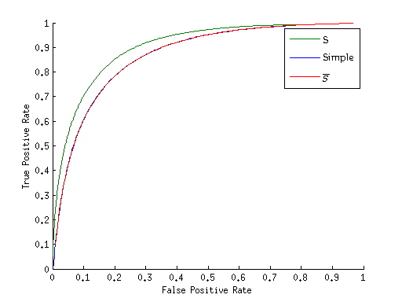

This work describes a saliency-detection algorithm inspired by [2] and using the kd-tree algorithm of [3] for approximate nearest-neighbor search. The code can be found here.
In ”Context-Aware Saliency Detection,” [2] proposes an algorithm to calculate the saliency of an object and its surrounding context by computing the distance (in color and space) to the nearest neighbors of an image patch. Salient objects would be distant from its neighbors, in similarity and space. A related approach is taken here, although details differ – primarily in the addition of a tempering step (and omitting the corresponding ”attendance” formula from [2]). The basic propagation algorithm from [3] is re-used for nearest-neighbor search. Since each kd-tree leaf contains up to 8 patches, a single query down the kd-tree yields up to 8 neighbors. By propagating the best two nodes from the top and left (found during earlier queries), up to 40 neighbors can be compared – 8 for the current patch, and 16 each from the top and left. Comparing 40 patches is computationally expensive, but fewer patches lead to lower accuracy. Figure 4a shows results for 40-neighbor (propagated) and 8-neighbor (non-propagated) comparisons.
Section 1.3 describes the algorithm, while Section 1.4 justifies the parametric choices made with regards to propagation and overlap. Quantitative comparisons to related work are made in Section 1.5, and weaknesses discussed in 1.6.
First we can begin by defining the distance formula, which incorpoates color and positional information from the kd-tree query:
| d(pi,pj) | = | (1) |
We repeat the distance calculation for each patch pi at several scales r ∈ R = {1,0.8,0.5,0.25}, and take the result i to be the average of all scales for K neighbors, with a scaling factor:
| Sir | = 1 − exp | (2) |
| i | = ∑ r∈RRS ir | (3) |
Usually by this point the map is noisy to various degrees (Figure 3b). To temper it, we apply an iterative thresholding function, and generate a normalized distance map Ŝ for each zero pixel to all nonzero pixels within a radius r = 32. A single threshold does not work well for all images across a dataset, and neither do typical adaptive methoods. Not only is the saliency map for an image typically multimodal (Figure 2b), in aggregate they tend towards uniformity (Figure 2a), making it difficult to use a fixed or adaptive threshold.
Smoothed saliency histograms for all of Dataset 1, which tend towards uniformity.
Smoothed saliency
histograms for the first
10 images of Dataset 1,
which are multi-modal.
This tempering step is expensive – but without it, the result looks like Figure 3b, with an abundance of false positives. An alternative formulation is also considered, as shown in Figure 3e: the saliency map with a much faster, simplified tempering step. Simplified tempering takes the mean of 10 thresholds of between 0 and 255. However, this is not of much help for reasons explained in Section 1.4. The full tempering map, Ŝ, works as follows:
| dthresh(pi,t) | = ∑ pj∈(p)>tdposition(pi,pj) | (4) |
| dist(p) | = ∑ t∈T T d thresh(p,t) | (5) |
| count(p) | = ∑ t∈T T |(p) > t| | (6) |
| Ŝi | = | (7) |
| S | = ⋅Ŝ | (8) |
where (p) returns the set of pixels surrounding p, in . To justify the formulation of Ŝ: dist⋅count rewards a pixel if its patch contains multiple nearby nonzero pixels. This helps to reduce the weight of sparse patches, and fills in dense blobs. The product is normalized by r2 (maximum count) and (maximum L2 distance to a nonzero pixel). The resulting distance map Ŝ is scaled to be between 0 and 1.
 Saliency Map with
Simplified Tempering
Saliency Map with
Simplified Tempering
Complete (100%) overlap is the full sliding-window WHT, and 0% overlap is equivalent to the non-overlapping, block-based WHT. (In practice, ”100%” overlap is actually n − 1 pixels, where n is the kernel size – here, n = 8.) Complete overlap leads to over-fitting from too many similar neighbors in a single leaf. Propagation helps mitigate this by increasing the search space, but from Figure 4a, simply decreasing the amount of overlap helps more. 75% overlap is functionally indistinguishably from 0% overlap (Figure 4b), in fact the optimal overlap appears to be around 25%. Here, the contributions of propagtion are small, albeit measurable – yielding a 3-4% improvement at most (Figure 4a).
Note that the while the tree is built with partially overlapping patches, each pixel maintains its own patch during the saliency-detection stage.
Error curves for various parameters
Error curves for various
overlaps (with
propagation).
Zoomed-in section shows
the minimal difference
between the first 4 modes
(note the scale).
Figure 5 is interesting: the simplified tempering generates nearly identical ROCs as without – which is somewhat to be expected; while the magnitude of the intensities may change, on balance the relative differences stay the same (Figure 5a). Looking at the curves at each threshold (Figure 5b) tells a different story: the true positive rate (TPR) for is extremely high – a symptom of over-fitting. Indeed, the false positive rate (FPR) for is also convex: pixels are being labelled as salient indiscriminately. For simple tempering, the TPR/FPR has a more agreeable shape (in spite of being somewhat stair-shaped), but incorporating Ŝ into the final map S shows the best results, due to the fact it diffuses salient pixels from dense areas (increasing TPR) while simultaneously lowering the weight of sparse areas (decreasing FPR).
 Error curves, with 25% overlap for each. ”S” is the primary saliency map, ”Simple” replaces Ŝ with the average of an iterated threshold, while is equivalent to taking the non-thresholded result, eg Figure 3b.
True Positive/False
Positive rates at each
threshold value between
0 and 255.
We compare against Itti’s classical algorithm [5] which emulates low-level features of human vision, Hou’s Spectral Residual [4], which suppresses redundant information by taking the difference of an image’s Fourier log-spectrum and the spectrum’s moving average, and Achanta’s Frequency-Tuned Saliency [1] where the entire image is treated as a surround (approximated by the average color across the entire image), with the pixel of interest at the center. [5] and [4] operate on reduced-resolution versions of the image, so we scale the ground-truth down to accommodate when needed. Scaling also has the effect of making these algorithms much faster to run – we operate at full-resolution, with an extremely slow tempering step. [1] also operates at full resolution, which is naturally fast due to its simple construction.
ROC statistics are calculated following the method in [1]: The saliency map is thresholded from 0 to 255, and positive/negative statistics are gathered against the ground-truth mask. The values at each threshold are averaged across all images in the dataset. Algorithm 1 sketches this thresholding step, and each saliency algorithm tested is run against this for comparision. We also do not binarize the generated saliency maps (for any algorithm), since it is not needed for our purposes.
Dataset 1 is composed of 1000 masks selected by [1], with the original images from the MRSA 5000-image salient object dataset [6]. Dataset 2 is composed of 62 images from [4] with well-outlined masks. In Dataset 1, the objects of interest are typically front-and-center while in Dataset 2, more background context is included, so salient features are less dominant. In Dataset 1 (Figure 6) the salient village is inconspicuous, while the lions blend into the background. On the other hand, Dataset 1’s skateboarder and airplane are trivially distinguishable (to the human eye, at least). Our algorithm is run with up to 40 neighbors and 50% overlap between patches.
Results are competitive on Dataset 1. The poor performance on Dataset 2 is likely due to its use of difficult natural images. One interesting observation is that the paper which proposed the dataset tends to do well – [1] designated the masks for Dataset 1, while [4] dominates its own images in Dataset 2. Hence it is beneficial to compare results across a variety of datasets, both to prevent over-fitting to a particular image type, and to properly gauge efficacy claims.
Images where the objects of interest blend into the background, or background objects have otherwise distracting colors and features. In short, we fare poorly on Dataset 2. For the top half of of Figure 10, the sky and landscaping are mistakenly detected, while in the bottom half, sun glare overwhelms salient objects. Moreover, the eagle is only outlined. Spectral Residual performs very well, and FTSRD suppresses background well, although it is still susceptible to glare.
[1] Radhakrishna Achanta, Sheila Hemami, Francisco Estrada, and Sabine Ssstrunk. Frequency-tuned Salient Region Detection. In IEEE International Conference on Computer Vision and Pattern Recognition (CVPR 2009), pages 1597 – 1604, 2009. For code and supplementary material, click on the url below.
[2] Stas Goferman, Lihi Zelnik-Manor, and Ayellet Tal. Context-aware saliency detection. In Computer Vision and Pattern Recognition (CVPR), 2010 IEEE Conference on, pages 2376–2383, June.
[3] Kaiming He and Jian Sun. Computing nearest-neighbor fields via propagation-assisted kd-trees. In CVPR, pages 111–118. IEEE, 2012.
[4] Xiaodi Hou and Liqing Zhang. Saliency detection: A spectral residual approach. In Computer Vision and Pattern Recognition, 2007. CVPR ’07. IEEE Conference on, pages 1–8, 2007.
[5] L. Itti, C. Koch, and E. Niebur. A model of saliency-based visual attention for rapid scene analysis. IEEE Transactions on Pattern Analysis and Machine Intelligence, 20(11):1254–1259, Nov 1998.
[6] Tie Liu, Jian Sun, Nan ning Zheng, Xiaoou Tang, and Heung yeung Shum. Learning to detect a salient object. In in: Proceedings of IEEE Computer Society Conference on Computer and Vision Pattern Recognition (CVPR, pages 1–8. CVPR, 2007.